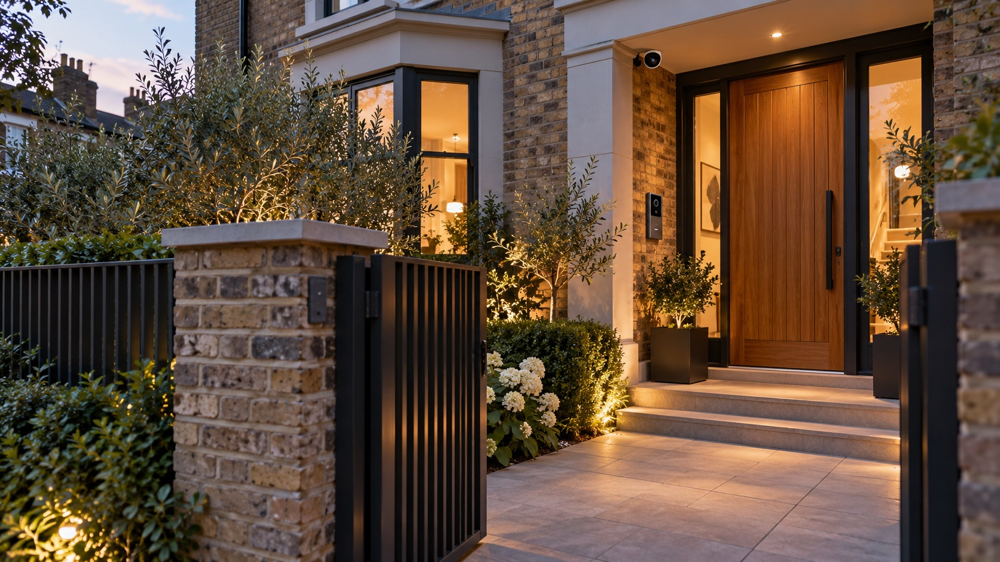
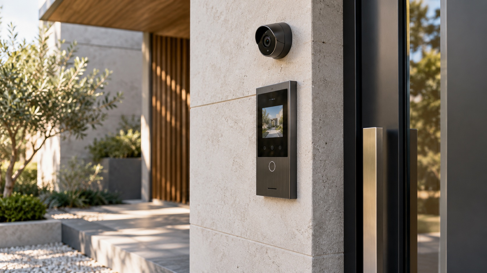

CCTV
Plan camera positions around entrances, approaches and the areas you want to check, with useful views in mind.
HOME SECURITY
Security should suit the property and feel straightforward to use. We help plan the equipment, positions and connections as one considered setup.
Get in touch
A CLEARER VIEW OF HOME
A useful system begins with your property and what matters to you. We help plan camera views, visitor communication and access points as a joined-up installation that is straightforward to use.

PLANNED AROUND THE PROPERTY
From seeing a visitor at the entrance to checking selected areas of the property, camera and entry positions should serve a clear purpose. We can talk through where equipment belongs and how you would like to use it.
Consider entrances, approaches and the specific areas you want to be able to check.
Choose a video entry or doorbell setup that fits your entrance and preferred devices.
We configure the agreed system and explain how to view it and manage access.
PROTECTION, PLANNED AROUND YOU
From cameras to entry systems, we help bring the right details together for your property and priorities.
Plan camera positions around entrances, approaches and the areas you want to check, with useful views in mind.
See and speak with visitors through an entry system planned for your doorway and household.
Install and set up a connected doorbell with the phones or screens you want to use.
Explore suitable ways to manage entry to the property or selected areas, based on how they are used.
Coordinate gate controls and entry connections with the access points and wider system.
Set up the agreed equipment and show you how to view cameras, answer calls and manage the controls.
START WITH A CONVERSATION